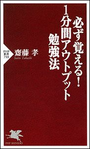
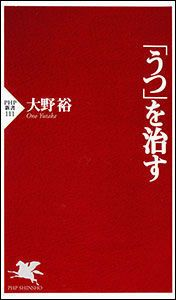
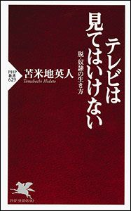

| PHP新書電子版ベスト50 2014 PHP電子 | |
| PHP研究所 | |
| (2014) | |
PHP新書電子版ベスト50
2014
PHP研究所 編
はじめに
2014年12月、PHP研究所の電子書籍の配信タイトル数が4000点を超えました。
販売数も伸び、電子書籍ユーザーが確実に増えていることを私たちも実感した一年でした。
弊社の電子書籍の中でも、ご好評を頂いているレーベルがPHP新書です。
PHP新書はPHP研究所創設50周年の年、1996年10月に創刊されました。
2014年12月現在までに964点が刊行され、そのうち465点が電子版として配信されています。
PHP新書が扱うテーマは政治、経済、社会、教育、文化、スポーツと多岐にわたります。難解なテーマをより平易に、広く共有されるテーマはより深く。「衆知を集めて時代を見抜く」をスローガンに、時勢において常に読者ニーズに応えるべく刊行を続けております。
この電子書籍は、そんなPHP新書電子版の2014年における売上ベスト50をご紹介するものです。
PHP新書の売れ筋テーマを見ていると、その時代が透けて見えてきます。
2014年刊行のタイトルだけではなく過去の作品も多くランクインしており、中には10年以上前に刊行されたタイトルもあり興味深いものとなっています。
皆様もぜひ、このランキングを俯瞰して今年を振り返ってみてください。そして興味を持たれたPHP新書をぜひご一読いただければと願います。
2014年12月25日 PHP研究所 電子出版部
【本電子書籍について】
○本電子書籍に掲載したランキングは2014年1月から12月1日までの全電子書籍販売ストアの売上を集計し、PHP新書電子版を抽出したものです。
○各ページ末の「電子書籍の詳細ページはこちら 」の「こちら 」の文字をタップまたはクリックすると、書籍の商品詳細ページに遷移します。
2014年 PHP新書（電子版）
第1位
他人を攻撃せずにはいられない人
片田珠美
2013年刊
罵声を浴びせる人から、「いい人の仮面」を被り、密かに相手を陥れる人までさまざまなケースをとりあげ、その心理を精神科医が分析する。
暴言を吐く、支配したがる、けなして自信を失わせる、優しいようで水面下で工作している、一見目立たない人を含めて、あなたの周りにはとんでもない人が隠れているかもしれない。
本書では、精神科医として「ターゲット」にされて、痛い目に遭った患者たちから聞いた、人を陥れる「攻撃欲の強い人」を事例で紹介。ターゲットの心をどんなふうに壊していくのか、その手法を取り上げて分析する。
「攻撃欲の強い人」とはどんな人か。多くの場合、攻撃される側は、ターゲットが抵抗できないが、それは一体なぜなのか。何のためにそんなことをするのか。結果どんな影響を及ぼすのか。はたして、攻撃欲の強い人と、どう向き合い対処すべきか。本書で明らかにする。
自分のために、人生を台無しにされないために――職場や家族に潜む「害になる人」の精神構造を知る。
電子書籍の詳細ページはこちら
2014年 PHP新書（電子版）
第2位
日本人はなぜ日本のことを知らないのか
竹田恒泰
2011年刊
「日本は世界最古の国」――誇るべきことなのに、なぜか学校では教えてくれない建国神話を紐解く。子どもに伝えたい「日本誕生の教科書」。
学校が教えてくれない「世界最古の国」の奇跡を、明治天皇の玄孫にして、ベストセラー『日本はなぜ世界でいちばん人気があるのか』（PHP新書）の著者が、強い信念をもって語った意欲作。巻末の「子供に読ませたい建国の教科書」では、「日本ってすごい！」という思いが自然と湧いてきます。
【内容】「建国記念の日はなぜ二月十一日なのか」「日本はいつどのようにできたのか」――世界中の国民が知っている自分の国の成り立ちを、日本人の多くは答えられない。初代天皇の存在は伏せられ、『古事記』『日本書紀』は非科学的として封印される。何より、日本が現存する世界最古の国家である事実を学校は教えてくれない。まるで誇りを持たせたくないかのような歪んだ歴史教育。
戦争もなく統一を果たし、中国から独立を守り抜いた奇跡の歩みを紐解こう。世界でいちばん人気がある日本を、私たち自身が愛せるように。
電子書籍の詳細ページはこちら
2014年 PHP新書（電子版）
第3位
日本はなぜ世界でいちばん人気があるのか
竹田恒泰
2010年刊
「もったいない精神」「日本食」「和み」――世界が猛烈な日本ブームに沸いていることを、いまこそ知ろう。北野武氏との対談も収録。
天皇の意味がよくわかる最強の日本論。
マンガ･アニメが席巻し、世界はいま空前の日本ブーム。しかし理由はそれだけではない。食文化、モノづくり、日本語、和の心、エコ――あらゆる日本文化に好意が寄せられている。それなのに自分の国を愛せなくなったのはあまりにも悲しい。
なぜ『ミシュランガイド』は東京に最多の星を付けたのか？ どうして「もったいない」が環境保全の合言葉に選ばれたのか？ 「クール･ジャパン」の源流を探ると、古代から綿々と伝わる日本文明の精神、そして天皇の存在が見えてくる。いまこそ知っておきたい日本のすごさが一冊でわかる。なんだか自信が湧いてくる！
【世界に愛される日本文化のキーワード】第一章「頂きます」／第二章「匠」／第三章「勿体無い」／第四章「和み」／第五章「八百万」／第六章「天皇」／終章「ジャパン･ルネッサンス」／巻末付録として北野武氏との対談「日本は生活そのものが『芸術』だ」を収録。
電子書籍の詳細ページはこちら
2014年 PHP新書（電子版）
第4位
ウェブとはすなわち現実世界の未来図である
小林弘人
2013年刊
なぜ「社会はウェブをコピーする」のか。「フリー」「シェア」そして「オープン」......インターネットの潮流を知れば未来が読み解ける。
「『フリー』などの潮流を見通してきた著者による新・ウェブ進化論」......大前研一氏（ビジネス・ブレークスルー大学学長）
「激変するウェブとテクノロジーが向かう先は？ 本書にその答えがある」......伊藤穰一氏（マサチューセッツ工科大学メディアラボ所長）
瞬く間に普及したスマートフォン、SFの世界からやってきたかのようなグーグルグラス、製造業の在り方を一変させる3Dプリンタまで、テクノロジーとそれをつなぎ合わせるインターネットなくしてもう、人間の生活を語ることはできない。かつて一部の人だけのものだったウェブはいまや現実世界を塗り替え、社会のルールすら変えようとしている。
しかも、その変化はあまりに急だ。産業革命以上ともいわれるインパクトのなか、私たちはいま何を経験しているのか。そもそも一世を風靡した「ウェブ2.0」からウェブはどう変貌し、どこに向かおうとしているか。インターネット黎明期からネットの進化と歩をともにした著者が本書で示すのは、ウェブ2.0以降の座標軸とこれからの羅針盤である。
著者いわく、いまや「社会がウェブをコピーする」時代になった。つまりウェブで起こっている潮流を理解すれば、現実世界の未来が見通せる。グーグルに代表されるアルゴリズムが世の中を支配するかと思いきや、いま私たちが過ごしているのはソーシャルメディアによって人間と人間とが接続された「人間中心主義」の世紀なのだ。
時間と空間を超えてつながる新しい人間関係のもとで、ハイパー資本主義以前にみられた贈与経済を彷彿させる「シェアリング・サービス」が勃興している。さらに「社会がウェブをコピーする」なかで、絶対に安泰と思われていた事業が思いもよらない競合に浸食され、組織づくり、イノベーションの作法、教育までもが根本から変化している。
はたして「昨日の常識が通じない時代」に私たちが身につけるべき「視座」とは何か。人間はウェブの力を味方にできるのか......。フェイスブックの歴史的意味からウェアラブルコンピュータによるパラダイムシフト、日本企業が行き詰ったほんとうの理由、そうした混沌の先にある未来までをも一つの線上で論じきった、渾身の一作。
電子書籍の詳細ページはこちら
2014年 PHP新書（電子版）
第5位
中国の大問題
丹羽宇一郎
2014年刊
中国に媚びるのではなく、中国を利用するために――大使として、実業家として中国全土を隈なく見てきた末に見通せる中国の現実を報告。
丹羽前大使を「親中派」と決めつけてはいけない。氏の中国論はきわめて誠実でまっとうである。（社会学者、『おどろきの中国』著者・橋爪大三郎）
世界一の貿易額をかさに着て、中国が驕りを見せはじめた。もはや日本なしでもやっていけると言わんばかりに。
経済的に勢いづいてはいるが、その内実は数々の難問に直面している。拡大する都市と農村の経済格差、国有企業の杜撰な経営体質、テロや暴動が絶えない少数民族問題、要人たちの汚職と不正蓄財......。
そうした中国国内の真実は、報道を通じて知られているようでいて、意外と情報は流れていない。感情論だけが先走り、隣国を正しく見据えられていないのではないか。
この状況に危機感をもった前中国大使が、ついに沈黙を破る。商社マンとして30年、大使として2年半。政財界トップの性質や思惑、はては国境近くの庶民や少数民族の生活実態まで、「病める中国」の姿をつぶさに見つめた迫真のレポート。
電子書籍の詳細ページはこちら
2014年 PHP新書（電子版）
第6位
日本人はいつ日本が好きになったのか
竹田恒泰
2013年刊
日本人はなぜ「日本が好き」といえるようになったのか。占領政策や戦後外交の問題点を指摘しながら、全国民に自信と勇気を与える一冊。
「あなたは日本のことが好きですか？」。そう問われて「日本のことが好きだ」と言える日本人はいまや少なくないだろう。だが、ほんの少し前の時代を思い出してほしい。「愛国心」と口にしただけで「ナショナリズム」「右翼」という言葉が返されなかっただろうか。「日本はダメだ」。メディアや評論家はそう繰り返し、人びとは無意識に「日本嫌い」を刷り込まれた。どこかで自国が素晴らしい国だ、と気付いていたにもかかわらず。
他国を見渡せばどうだろう。米国人も、中国人も、すべからく人びとは自分の国を愛し、その国民であることに誇りをもっている。そのなかで、どうして日本だけが「日本が好き」ということすら、言うことが憚れる社会であったのか。竹田氏は言う。「それは、日本を愛することが禁止されたからです。戦争に負けるというのは、そういうことなのです」。
先の大戦後、日本人の力を恐れたGHQはどのように、わが国を骨抜きにしていったのか。「百年殺しの刑」とも称される恐るべき政策や、GHQの意図を汲んだ日教組の「戦後教育マニュアル」の正体を知れば、戦慄を覚えない人などいないだろう。当時の資料を丹念に読み込みながら、本書は「日本人が日本を愛せなくなった理由」を突き止めていく。
一方で、まさに日本の手足を縛る「日本国憲法」をどう考えればよいのか。憲法九条の問題点を痛烈に指摘しながらも、その憲法のなかに竹田氏は「国体の護持」を見る。目下、国家的な議論が巻き起こりつつある憲法改正の論点を知れば、どのようにそれを改正すべきか、それによって尖閣諸島・竹島で日本の領土を侵食する中国・韓国との関係がどう変わるか、というシナリオも見えてくるはずだ。
そしていま、私たちはやっと「自分の国がいちばん」と素直に言えるようになった。それはなぜだろう。「日本人はいつ日本が好きになったのか」。その謎を解き明かしながら、人びとが当たり前のように愛国心をもち、自分の国に誇りを持てるようになった日本の未来を竹田氏は描き出す。「国を愛する」とはどういうことか。その根源的な問いに答えつつ、すべての日本人に勇気と誇りを与える一冊。
電子書籍の詳細ページはこちら
2014年 PHP新書（電子版）
第7位
伝わる・揺さぶる！ 文章を書く
山田ズーニー
2001年刊
仕事で受験で恋愛で。小論文指導のエキスパートが、想いを伝え、相手を動かし、望んだ結果を出すための、本当に役立つ文章術を伝授。
お願い、お詫び、議事録など、私たちは日々、文章を書いている。どんな小さなメモにも、そこには読み手がいて、目指す結果がある。ではそのような場面で、どうしたら誤解されずに自分の思いを伝え、読み手の気持ちを動かすことができるのだろう？
著者は長年、高校生の小論文指導に携わり、現在は糸井重里氏のサイト『ほぼ日刊イトイ新聞』で「大人のための小論文教室」を連載し人気を博している。本書では「意見」「望む結果」「論点」「読み手」「自分の立場」「論拠」「根本思想」の七つの視点から、よい文章を書くための戦略をアドバイス。「自分の意見が見つからないときは、小さな問いを立ててみる」「テーマと論点の違いを意識する」などのユニークなノウハウを、具体的な文例を紹介しながら、解説していく。
単なる文章のテクニックをこえ、自分の頭で考え他者と関わることの痛みと歓びを問いかける、コミュニケーションの本質に迫る一冊である。
電子書籍の詳細ページはこちら
2014年 PHP新書（電子版）
第8位
語られざる中国の結末
宮家邦彦
2013年刊
急減速する経済成長の一方で、軍拡をやめない中国。来るべき米中「東アジア戦争」の結末を読み解き、日本のとるべき戦略を大胆に提言。
「米国・中東も知る宮家氏の複眼的な分析力を信頼している」......内閣総理大臣 安倍晋三
著者はそこにアヘン戦争以来、「西欧文明の衝撃」から逃れられない巨大国家のトラウマをみる。いま中国が地球規模で米国と張り合わずとも、ユーラシア大陸の東半分と西太平洋で勢力圏を回復できればよい、と考えるなら、東アジア、西太平洋における米中衝突の可能性は消えない、というのがその見立てだ。
すでに目にみえない「サイバー戦」というかたちで衝突は始まっている。戦線が拡大し、米中が正面から激突する「第二次東アジア戦争」が起こったとき、その敗者はどちらになるのか。その後、中国はいかなる変容を遂げるのか。そこで描かれるのは「中国統一・独裁温存」から「中国漢族・少数民族完全分裂」という7つの精緻なシナリオだ。
著者はいう。「東アジアのパワーシフトを強かに生き残り、新たなる国際秩序の主導権をわが国が握ったとき、真の意味で第二次大戦は『歴史』になる」。はたして日本はこの変化を千載一遇のチャンスにできるのか。そのために行なうべきは何か。日本の中国専門家たちが誰も語らなかった衝撃の中国論。
内容例：第四次グレートゲーム／驚くべき『人民日報』掲載論文／「核心的利益」に一喜一憂するな／改革開放政策も最終回答ではない／中国社会に「絶対唯一神」は不要／優秀なエコノミストほど「政治音痴」／国有企業幹部六人が中央委員／グーグル社と中国政府の確執／米国が恐れる中国版「真珠湾攻撃」／「第二次東アジア戦争」は短期戦？／日米同盟の「不都合な真実」／「保守の進化」が日本の命運を分ける
電子書籍の詳細ページはこちら
2014年 PHP新書（電子版）
第9位
必ず覚える！ 1分間アウトプット勉強法
齋藤孝

2011年刊
アウトプットなしの勉強法は考えられない――これが教育学者･齋藤孝の勉強観である。
われわれは、試験や発表、報告など、なんらかのアウトプットを行うために勉強する。ならば、その目的を見すえた勉強法を実践すべきだろう。また、勉強して数年たつと内容を断片的にしか覚えていないことがよくあるが、｢声に出す｣「人に伝える」というアウトプットを行うと記憶に定着する。著者は学生時代から現在に至るまでこの方法を実践し､あらゆる難関を突破してきた。
本書では、具体的に「世界史」「法律」「英語」「データ」の勉強を紙上再現し、また数学の勉強法についても触れる。さらに勉強の目的に関しても重要な視点を提供。勉強の理論と実践を簡潔に語る一冊である。
電子書籍の詳細ページはこちら
2014年 PHP新書（電子版）
第10位
パーソナリティ障害 いかに接し、どう克服するか
岡田尊司
2004年刊
現代人の多くが抱えているパーソナリティ障害の諸問題と解決策を、精神医学の観点から詳細に解説。豊富な具体例がとても参考になる。
パーソナリティ障害（人格障害）とは、偏った考え方や行動パターンのために、家庭や社会生活に支障をきたした状態のこと。愛を貪る、賞賛だけがほしい、主人公を演じる、悪を生き甲斐にする、傷つきを恐れる......現代人が抱える生きづらさの背景には、ある共通の原因があるのだ。アメリカ人の10％がパーソナリティ障害であるという統計もある。
本書は、境界性、自己愛性、演技性、反社会性、回避性など、パーソナリティ障害の10タイプそれぞれについて、（1）特徴と背景、（2）接し方のコツ、（3）克服のポイントを、具体的にわかりやすく解説してくれる。パーソナリティ障害全般に関する日本ではじめての入門解説書である。
本書では、具体的に「世界史」「法律」「英語」「データ」の勉強を紙上再現し、また数学の勉強法についても触れる。さらに勉強の目的に関しても重要な視点を提供。勉強の理論と実践を簡潔に語る一冊である。
電子書籍の詳細ページはこちら
2014年 PHP新書（電子版）
第11位
なぜ中国から離れると日本はうまくいくのか
石平
2013年刊
古代より日本は中国に近付くと失敗し、距離を置くと繁栄した。その法則の原理を歴史的な視点から解明し、安倍政権がとるべき道を提言。
石原慎太郎氏推薦！ 「『日中友好』の誤りをこれほど完全に証明した一書を私は知らない」
世の中に日中関係を論じた書物は数多ある。しかし本書が唯一無二を誇るのは、一つの知見や時代に捉われることなく、政治・経済・歴史の知識を総動員したうえで、これまで誰も論じてこなかった「ある法則」を見出したことだ。
その法則は「『日中友好』を進めれば日本経済も、日中関係も安泰だ」という日本人の「常識」を完全に覆す。それは「中国となるべく距離を置き、関係が希薄であったときのほうが日本は繁栄し、日中外交にも揉めごとが起きない」という驚愕すべきものだ。
著者はまず、日中関係史が始まった2000年前まで時代を溯り、煬帝を激怒させた聖徳太子の決断から「赤い夕日の満洲」がもたらした破滅、民主党政権の失敗と第二次安倍政権の成功までを一気に概観し、その法則性を完全証明していく。それは圧巻というほかない。
そのうえで現在の中国をみれば、経済成長の鈍化を覆い隠すように習近平政権はウルトラ・ナショナリズムに走っている。ならば2000年の歴史から何を学び、いかに「中国抜き」の国家戦略を構築するべきか。「誰よりも中国を知る男」が著したかつてない日中関係論。
内容例：中国皇帝に「独立宣言」を叩きつけた聖徳太子／「鎖国政策」で平和と繁栄を謳歌した江戸時代／中国は「謝絶すべき悪友」と喝破した福澤諭吉／そもそも満洲は「日本の生命線」だったのか／圧力に屈して取り止められた靖国公式参拝／「子供レベルだ」と嘲笑された民主党の「親中外交」／第二次安倍政権誕生、そして「価値観外交」の始動／中国でトクヴィルが大反響を呼んでいる理由／「敵は日本にあり」は規定の政策路線／視点を変えれば中国大陸も「陸の孤島」だ／「中国抜き共栄圏」の構築とTPP参加の重要性 ほか
電子書籍の詳細ページはこちら
2014年 PHP新書（電子版）
第12位
使える！「孫子の兵法」
齋藤孝
2012年刊
「勝つよりも負けないための極意」「完璧を期すより、不完全でも速く仕事を仕上げよ」......最高峰の戦術書のエッセンスが身につく！
交渉事から上司・部下との関係まで､仕事とは「戦い」あるいは「ゲーム」だと割り切ればかえって楽になるものだ｡ならば負けないための戦略的判断の技術を、中国の春秋時代に書かれた兵法書の古典『孫子』に学ぼう。
仕事の環境を味方につける法、「己（おの）れ」を知るにはどうすればよいか､組織で求められる人材になるための考え方......。「風林火山」「彼れを知り己れを知らば､百戦して殆（あや）うからず」などの､知っておきたい『孫子』由来の名句の名言を吸収し､真に活用する方法をすっきり解説。
【内容例】■「プロ」に徹すれば、厳しくも楽な世界が待っている ■上司・同僚の"虚"を撃て ■人間関係を保つための「風林火山」 ■相手の逃げ道を用意せよ ■優しいだけではリーダー失格 ■部下に今の状況を尋ねよ ■劣勢はこうして盛り返せ
電子書籍の詳細ページはこちら
2014年 PHP新書（電子版）
第13位
統合失調症 その新たなる真実
岡田尊司
2010年刊
精神疾患のひとつ統合失調症の正しい理解と最新の治療法を解説。適切な治療と接し方によって多くの場合、症状は改善される。
百人に一人がかかる身近な疾患であるにもかかわらず、多くの人にとって縁遠く不可解な統合失調症――そのメカニズムが現在かなりのところまで解明され、治療法は大きく様変わりしつつある。時間はかかるが統合失調症は克服できる病になろうとしているのだ。
本書ではこの疾患の背景やメカニズム、治療技術や回復過程について、最先端の知識をわかりやすく伝える。そして、この病を理解して克服するためには、正しい知識とともに人間として共感する姿勢が大切だと説く。
○はじめに 克服できる病気に、○第一章 統合失調症とは、どんな病気か、○第二章 闇に閉ざされた歴史から希望の光へ、○第三章 統合失調症の症状と診断、○第四章 統合失調症と認知機能障害、○第五章 統合失調症の神経メカニズムと原因、○第六章 統合失調症と社会、○第七章 統合失調症の治療と回復、○おわりに 統合失調症と上手につき合う
電子書籍の詳細ページはこちら
2014年 PHP新書（電子版）
第14位
微分・積分を知らずに経営を語るな
内山力
2009年刊
論理的なビジネスパーソンは微分・積分で物事を考える。実は非常に理解しやすいビセキを解説、誰にも文句を言わせない仕事術を開陳！
在庫管理､価格決定､マーケティングなど､私たちはあらゆるビジネスシーンで「昨日の結果から明日を読む」ことが求められる｡カンや経験で予測を行なってきた多くの企業を尻目に､セブン-イレブン・ジャパン､トヨタ､花王は微分・積分を活用することで大成功をおさめた｡
"ビセキ"こそは､世界中の天才たちの努力によって生み出された､最も確実に明日を読む方法なのだ。最大値、最小値、確率、微分係数（＝限界利益、あるものが1単位増えると、それに伴って増える利益）などを算出すれば、誰にも非難されない合理的判断を行うことができる。
しかもその概念は極めて単純、誰にでも理解できる｡本書には数式はほとんど出て来ない。
ややこしい計算は、すべてパソコンがやってくれる。数式をおぼえるよりも、「微分・積分思考法」を身につけることが肝心なのだ。数字に強い「できる人」､堅実な経営者となるためには､本書の内容を理解しておきたい｡
電子書籍の詳細ページはこちら
2014年 PHP新書（電子版）
第15位
こう観ればサッカーは0-0でも面白い 「戦術」と「個の力」を知的に読み解く
福西崇史
2014年刊
元日本代表の解説者は試合中にどこを見ているか。キーワードはボランチ、戦術、個の力。世界最強チームからW杯の展望までを徹底分析。
「サッカーを観るとき、どんなところに注目していますか？」
サッカー元日本代表で、現在ではその説明のわかりやすさから、最も注目されるサッカー解説者である福西崇史さん。「福西さんの『サッカーを観る眼』はどんな人よりもたしかで本質をついている」とは、元代表のチームメートでもある遠藤保仁選手の言葉です。
そんな彼は解説のとき、ピッチのどこを見ながら試合の流れを読み解いているのか......。その質問に福西さんは「ボランチ」「戦術」「個の力」と答えます。この3つを知れば「サッカーの見方」が驚くほど変わり、選手の動きや駆け引きが理解できる――。そうした「福西流・観戦術」を「選手」と「解説者」という二つの視点から語ったのが、この本です。
「戦術」＋「個の力」という観点から見たとき、日本代表はどこまで進化したのでしょう。本田圭佑選手が語った「個の力」やザック・ジャパンが採用した「4－2－3－1」「3－4－3」などのシステムの本質を、緻密に、知的に福西さんは読み解いていきます。
読み終わったあとにはきっと、ピッチに展開するフォーメーションや監督の采配、選手の動きの意味、現代サッカーがたどってきた歴史までが手にとるようにわかり、日本代表のポテンシャルと日本サッカーの未来が見通せるはず。2014年ワールドカップ・ブラジル大会をさらに愉しむための一冊としても最適です。
【目次】第1章 「ボランチ」を見ればチームのカラーがわかる／第2章 「戦術」を見ればチームの理想型がわかる／第3章 「個の力」を見ればチームの可能性がわかる／第4章 「個」と「組織」を完璧に融合したバルセロナ／第5章 日本代表はどこまで進化したか／終章 日本サッカーの未来
電子書籍の詳細ページはこちら
2014年 PHP新書（電子版）
第16位
どうして時間は「流れる」のか
二間瀬敏史
2012年刊
時間はなぜ過去から未来に流れるのか。「時間の矢」の話を中心に「熱力学」「重力」「宇宙」のテーマでわかりやすく説く入門編。
なぜ、時間は過去から未来に流れるのか。誰もが一度は疑問に思ったのではないか。たしかに「時間って何？」とあらためて問われると、明確に答えられる人はいないだろう。
生物学的にも、哲学的にも、いろいろな答えはありそうだが、本書は、時間の謎について考える物理学者が「時間はなぜ流れるのか」や「時間はどのように流れるのか」といった問題をとりあげていく。極力数式を使わずに、図を多用し、文系の人にもわかりやすくまとめている。
「時間とは何か」を考えていくと、最終的には宇宙の成り立ちにまで話がつながっていく。相対性理論やビッグバン理論から、超重力理論や超ひも理論まで、最新の宇宙論も含め、時間という軸で解説する。さらには、タイムマシンの可能性まで、時間と自然の不思議を満喫できる話題を盛り込んでいる。
毎日の雑事に追われる忙しい人にこそ、読んでもらいたい一冊である。
電子書籍の詳細ページはこちら
2014年 PHP新書（電子版）
第17位
本番に強い脳と心のつくり方 スポーツで頭がよくなる
苫米地英人
2010年刊
スポーツはIQを上げるためのもの――運動と思考、脳と神経の相互原理を応用して、緊張とリラックスの効果的なサイクルを身につけろ！
リラックスと緊張は、自分で操れる！
「本番で緊張せずに、自分がもてる最高のパフォーマンスを発揮するにはどうすればよいか」――その答えは、なんとスポーツにあった！ 正しくスポーツに取り組めば脳が鍛えられるというのだ。
大切な商談やプレゼン、試験。リラックスが必要な決定的場面で自分の心をコントロールするための理論は、スポーツも仕事も同じ。「緊張にも二種類ある」「集中力は必要ない」「理想の脳波はアッパーシータからローアルファ」「セロトニン体験を積む」。
脳と心のメカニズムを解明した脳機能学者が、もっとも身近で理想的なIQトレーニングを伝授。
【内容例】IQアップのポイントは「ゲーム性」／自分に自信をもつ技術／リラックスと緊張の理想的なサイクルをつくる／緊張にも二種類ある／集中力は必要ない／なぜ成功体験を積むことが重要なのか？／なぜ反復練習が必要なのか？／決定的場面で簡単に緊張をほぐす方法 etc.
電子書籍の詳細ページはこちら
2014年 PHP新書（電子版）
第18位
日本人が一生使える勉強法
竹田恒泰

2014年刊
なぜビジネス書を読んでも成功できないのか。ベストセラー作家が自らの人生を赤裸々に明かしながら、ほんとうの勉強法を一挙に大公開。
これまで書籍や雑誌、テレビで皇室から日本文化、外交問題までを語ってきた竹田さん。テレビ出演のときに共演者から「どうしてそんなにいろいろなことを知っているのですか」とも聞かれるそうですが、本書では竹田さんが初めて自らの勉強法を明らかにします。
そもそも竹田さん自身、小さいころには勉強ができず、人前で話すこともできない少年だったとか。一時期は自己啓発書を読み漁ったこともあったそうですが、なかなかイメージどおりに成功できない。いま同じ悩みを抱えている人も少なくないでしょう。
しかし日本文化の神髄を学んでいくうちに、竹田さんは気づいたそうです。そもそも日本と根本の価値観が異なる「西洋式成功哲学」に基づく勉強法でうまくいくはずがない......。そこで編み出したのが「日本式成功哲学」を前提にした勉強法でした。
あくまで「自分」が主語になる西洋式と「日本式成功哲学」は正反対。本書でまず竹田さんが語るのは「重要なのは『生き方』ではなく『死に方』」「夢を持つデメリット」「プラス思考よりもマイナス思考」など、巷の自己啓発書とは全く逆の話です。
では、「他者」のために生きる日本人が勉強をする意味はどこにあるのでしょう。「勉強の本質」から竹田式・情報収集の実践メソッド、講演の達人が誇るコミュニケーション術、人脈のつくり方までを、自らの体験や時事的な話題も盛り込みながら大公開します。
ビジネスパーソンにとっても、学生にとっても、日本人なら人生の指針となり、一生使えるどこにもないビジネス書の誕生です。
内容例："筆一本"で無一文からの再スタート／勉強法・仕事術・成功哲学の密接な関係／「惜しまれながら死んでいく」という究極の幸せ／西洋と日本で全く違う「夢」の意味／「自分の使命」とは自分で決めただけ／マイナス思考を経ないプラス思考はただの博打／ダ・ヴィンチの「垣根を越える知の在り方」に学ぶ／「緊急ではないが重要なこと」の代表が勉強／スポーツ紙の記事で社会の動きを掴む／自分の意見と違う人の著作を読む効果／人間関係の入口と出口を間違えないように／「日本的DNA」に目覚めればお金はついてくる／「和の精神」とはキリストや釈迦の教えそのもの......ほか
電子書籍の詳細ページはこちら
2014年 PHP新書（電子版）
第19位
人を動かす対話術 心の奇跡はなぜ起きるのか
岡田尊司
2011年刊
個人化孤立化し、傷つきやすくなった現代社会。家庭、学校、職場などにおける最適なコミュニケーションの取り方を、精神科医が解説。
人間関係は対話を通じて展開していく。相手の心を動かし、行動を変化させるには、どういう対話の仕方が効果的なのか？ どんなに心を砕いても相手に通じないときはどうすればいいのか？
本書では、共感的作用と弁証法的作用という対話がもつ二つの基本的な働きを軸に、ロジャーズ、コフートからリネハンまで、解決志向アプローチなど奇跡とも言える変化を引き起こす、選りすぐりの対話的アプローチ七種を豊富な具体例で解説する待望の対話入門の書である。
「うつ」のサラリーマンを職場に復帰させるのも、自傷行為を繰り返してきた女性が安定を取り戻していくのも、十年以上引きこもっていた若者が就職して働き出すのも、その変化を媒介するのは対話である。対話は驚くべき可能性をもつ。
電子書籍の詳細ページはこちら
2014年 PHP新書（電子版）
第20位
利権の復活 「国民のため」という詐術
古賀茂明
2013年刊
政治家が「官僚のレトリック」を模倣しはじめた――原発再稼動、TPP、アベノミクス......「国民のため」の裏に潜む利権の構造を暴く。
「私たちの暮らし向きがよくなるかも。安倍さん、抵抗勢力に負けずにガンバレ!!」――多くの日本人はいま、安倍総理の改革に期待を膨らませているはずだ。東京へのオリンピック招致も決まり、消費増税アレルギーはどこへやら、自民党政権はますます追い風に乗っている。
ところが......。そんな安倍人気の背後で、官僚･族議員がいま、利権の温存･拡大をめざして不穏な動きを活発化させはじめた。いや、その安倍人気こそが、巧妙に仕組まれた出来レースの可能性があるのだ。
「このままではたいへんなことになりますよ」――マスコミを使って私たちの不安を煽る。決してウソをついているわけではない。むしろ国民が思わず納得するようなレトリックを駆使し、進んで彼らの片棒を担がせるかたちに仕向ける巧妙な詐術がそこにはある。原発再稼動、TPP参加、アベノミクス......いかにも「国民のため」の改革であって「聖域はない」と謳いながら、そのじつ既得権には手をつけない。政官財一体となった利権の構造は、このまま焼け太りつづけるのか？ 日本の政治が逆戻りしていないか？
元･改革派官僚が、ニュースで報道される政治的発言の真意と裏の構造を読解。「国民のため」の裏に潜む利権の構造を暴く。また、メディア戦略を駆使する政治家の象徴でありながら、安倍政権とは対極にある橋下徹氏のレトリックにも言及。
使われるメディア、騙される国民――そう、私たちは騙されつづけているのかもしれない。
電子書籍の詳細ページはこちら
2014年 PHP新書（電子版）
第21位
インターネット的
糸井重里
2001年刊
リンク・フラット・シェアする生き方・考え方......新時代の豊かさを凝縮したインターネット的。情報論を超えた人生論・幸福論を提示する。
「おいしい生活」「不思議、大好き」等のコピーで一世を風靡した糸井重里。今や一日35万アクセスを誇る『ほぼ日刊イトイ新聞』を開設し、IT・インターネットの世界でもカリスマ的存在として注目される著者が、未来の生活コンセプトを打ち出した！ それが、「インターネット的」。
表現法、思考法、消費と生産の関係......生活・ビジネスの両面で巷間言われるのとは全く違う「ほんとは優しい情報革命」が動き出していた。
著者は言う。「IT時代のビジネスモデル」を狙う前に、幸せ観、歴史観、世界観を宣言しなければ、ものをつくることも売ることも始まらない。またネットを通じて「個」と「個」がつながる時代だからこそ、「お客様は神様」原則を乗り越えなければ、クリエイティブな市場は育たない。
自身のホームページを超人気サイトに育てる中で見えてきた、これからの仕事と生活。誰も教えてくれなかった「インターネット的」世界の秘密がこの一冊に！
電子書籍の詳細ページはこちら
2014年 PHP新書（電子版）
第22位
「うつ」を治す
大野裕

2000年刊 ※注 2014年12月に『最新版 「うつ」を治す』が発刊されています
急増する自殺の背景には気づかれないうつ病が存在すると著者。身近な「うつ」をどう発見し、どう治すか？ 最新の研究を混じえて解説。
気分が沈み込んだり、何もする気が起こらなかったりするのは誰もが日常的に経験すること。でもそれが1週間以上も続いて、食欲の減退や不眠も重なるようになったら「うつ病」かもしれない？
いま「うつ」に苦しむ人が増えている。急増した中高年男性の自殺の背景にも「うつ病」がひそんでいるケースが多い。「うつ病」は「心の風邪」ともいわれるが、「気持ちの問題」として軽視すると、自殺などによる死に至る危険もあるので要注意と著者は警告する。
著者は慶應病院の精神科に勤務する傍ら、地域や職場のメンタルヘルス向上にも積極的に取り組んでいる、うつ病治療のエキスパートである。本書では、本人にも周りにも人にも気づかれにくいうつ病のサインの解説と併せて、認知療法、SSRIを用いた薬物療法などの最新の治療法を紹介する。「うつ」に苦しむ人たちや、どう接したらよいか悩んでいる家族や同僚をやさしくサポートする一冊である。
電子書籍の詳細ページはこちら
2014年 PHP新書（電子版）
第23位
上達の法則 効率のよい努力を科学する
岡本浩一

2002年刊
ビジネスでも趣味でも、絶えず新しい知識や技術の習得が人生を豊かにする。そのために必要な上達術を認知心理学に基づいて紹介する。
仕事でも趣味でも、たえず新しい知識や技術の習得が、人生を豊かにする。英会話、パソコン、ゴルフ、さらに、あらゆる資格や稽古ごと等々。やる限りは上達したいものである。万年初心者ではつまらない。では、上達を極めた人と、そうではない人と、どこが違うのだろうか？
本書は、記憶心理学、学習心理学、記憶心理学などをベースに、上達法を科学的に分析。
まず、「できる人」の記憶の構造はどうなっているのだろうか。アイコニックメモリ（感覚記憶）、ワーキングメモリ（作動記憶）、長期記憶などについて説明する。そして、上達の力学が＜スキーマ＞や＜コード化＞という能力にあることを解明。その理論から独自の上達ノウハウを披露する。
「得意なものにこだわる」「大量の暗記暗唱法」「マラソン的訓練法」等々。さらに上達のプロセスで必ず訪れる「スランプ」とは何か、その対策も論じている。
努力が報われるために、本人だけでなく、親、教育者、コーチ必読の書。
電子書籍の詳細ページはこちら
2014年 PHP新書（電子版）
第24位
「人間嫌い」のルール
中島義道
2007年刊
気難しい、ひねくれ者、病気......。自他の不誠実さが許せない過敏な心の持ち主が、蔑みの真っ只中で強く、よりよく生き抜くための指針。
「人はひとりでは生きていけない」。その言葉を錦の御旗に、表向きうまくやるのが「おとな」、できない人は病気と蔑む――他人を傷つけないという名目の下に、嘘やおもねりも正当化されるのが日本社会である。そんな「思いやり」の押しつけを「善意」と疑わない鈍感さ。「人間嫌い」は、そこに途方もない息苦しさを感じてしまう人なのだ。
したくないことはしない、心にもないことは語らない。世間の掟に縛られずとも、豊かで居心地のよい人間関係は築ける。自分をごまかさず、本音で生きる勇気と心構えを与えてくれる一冊。
【人間嫌いのルール】なるべくひとりでいる訓練をする／したくないことはなるべくしない／したいことは徹底的にする／自分の信念にどこまでも忠実に生きる／自分の感受性を大切にする／心にもないことは語らない／非人間嫌いとの「接触事故」を起こさない／自分を「正しい」と思ってはならない／いつでも死ぬ準備をしている etc.
電子書籍の詳細ページはこちら
2014年 PHP新書（電子版）
第25位
東大卒プロゲーマー 論理は結局、情熱にかなわない
ときど
2014年刊
東大卒プロゲーマー「ときど」初の著作。なぜ彼は最大の武器である論理や効率を捨てたのか。優勝回数世界一の男が語る勝利への執念。
優勝回数世界一のプロゲーマー、初の自著！
ゲームと勉強をリンクさせて東大に合格、バイオマテリアル研究の成果が国際学会で評価された人物は、なぜエリートコースを捨て、未開の地だったプロゲーマーの世界へ進んだのか？ さらに彼はプロ入り後、順調に勝ち星を増やしていたにもかかわらず、最大の武器である合理性を手放すことを決意する。
論理の限界にぶつかったIQプレイヤーは、何を考え、どう行動したのか――ゲームをとおしてたどりついた、新しい勝利の方程式。
「ゲームをしていたのに、東大に入れたのか。ゲームをしていたから、東大に入れたのか。――僕の場合は後者であろう」
「合理性や効率を極めた僕だからこそ、それだけでは勝てないことを身をもって学べた」
「練習に付き合ってくれるプレイヤーたち。働いて家庭をもち、一線を退いた彼らの『おれの分まで、頼むよ』という想い。彼らが、僕のモチベーションの源泉だ」（すべて本書より要約）
電子書籍の詳細ページはこちら
2014年 PHP新書（電子版）
第26位
働くひとのためのキャリア・デザイン
金井壽宏
2002年刊
入社、昇進、転職等、誰にでも訪れる節目をどう主体的に意味づけるか。それが長期的な仕事生活を左右する。働くみんなに役立つ一冊。
就職後の現実に失望する若者、疲れたミドルと元気なミドルの二極分化......。たった一度の仕事生活を納得して送るにはどうすればいいのか。
入社、昇進、転職......人生の節目には自分を見つめ直し将来の方向性をじっくり考える――これが本書のおすすめする「キャリア・デザイン」。これさえすれば、後は偶然に流される生き方も長期的にはプラスに作用する、と著者は言う。
心理学にも精通する著者は、経営学の中でも人間の問題に深く関わるトピックを主に研究している。本書では、自分らしく成長していくためのヒントを、代表的なキャリア研究、発達心理学の概念を通して紹介。
【主な内容】◎キャリアは働くみんなの問題 ◎揺れ動くキャリア観―なぜ移行期、節目に注目するのか ◎キャリアをデザインするという発想―ただ流されるのとどう違うのか ◎最初の大きな節目―就職時と入社直後の適応 ◎節目ごとの生涯キャリア発達課題 ◎「賢い働き方」をモノにしよう
電子書籍の詳細ページはこちら
2014年 PHP新書（電子版）
第27位
女性の品格 装いから生き方まで
坂東眞理子
2006年刊
「礼を尽くす」「得意料理をもつ」「愛されるより愛する」――日常の立居振舞いに、女性の生き方と品位はおのずと表われる。
いまや女性の社会進出、活躍が当たり前となった現代の日本。学校や職場でも、優秀で元気なのは女性ばかりである。女性の価値観、果たすべき役割が大きく変化しているのだ。では、古い型の「女らしさ」はもはや求められないのだろうか？ いや、女性上位の時代だからこそ、従来の男性とは異なる価値観、よき女性らしさを、職場や家庭に持ち込んでほしい、と著者は語っている。
「礼状が書ける」「約束をきちんと守る」「型どおりの挨拶ができる」「姿勢を正しく保つ」「贅肉をつけない」「人に擦り寄らない」「よいことは隠れてする」「得意料理をもつ」「恋をすぐに打ち明けない」――本書は、ビジネスから装い、話し方、恋愛にいたるまで、女性としての振舞い方を具体的にアドバイス。何げない日常の立居振舞いに、女性の生き方と品位はおのずと表われるものである。
電子書籍の詳細ページはこちら
2012年 PHP新書（電子版）
第28位
直感力
羽生善治
2012年刊
直感の9割は正しい。生涯獲得タイトル数歴代1位となった希代の棋士が、直感を磨く方法、実践の場で用いる技術を開陳！
生涯通算獲得タイトル数歴代1位、史上最速での1200勝達成、王座を奪取し三冠！ 進化を続ける希代の棋士の「直感力」を初めて開陳。
「直感」と「読み」と「大局観」。棋士はこの三つを使いこなしながら対局に臨んでいる。そして経験を積むにつれ、比重が高くなり、成熟していくもののひとつが「直感力」であるという。
将棋は、ひとつの場面で約八〇通りの可能性がある。それを瞬時に二つ三つに絞り、直感によってひとつの手を選ぶ。直感は、一秒にも満たないような短時間でも、なぜそれを選んでいるのか、きちんと説明できるものだ。直感とは、自分自身が築いたものの中から萌芽するものであると著者はいう。
内容例を挙げると、◎「見切る」ことができるか ◎無駄はない ◎底を打つ ◎何も考えずに歩く ◎他力を活かす ◎見極めの制度 ◎道のりを振り返らない等々
迷走続ける現代社会に生きる我々に、自分を信じ、突き進む力と勇気を与える一冊。
電子書籍の詳細ページはこちら
2014年 PHP新書（電子版）
第29位
覚えるだけの勉強をやめれば劇的に頭がよくなる 大人のアウトプット勉強法
小川仁志
2011年刊
大学受験、商社就職試験、公務員試験、大学院受験など、あらゆる分野の難関を突破してきた著者が教える一生使える哲学的勉強法！
15分間集中法、一気多読法、古書店「知の史跡」巡り――フリーター 引きこもりから公務員へ、さらに働きながら哲学者となって准教授へ転身するまで、あらゆる勉強をしてきた著者が語る、知性を磨く頭脳改革法とは？
大学受験、就職試験、公務員試験、大学院受験、高専准教授採用試験と、著者はあらゆる難関を突破してきた。
ある時、「自分が考えたことを外に発信できなければ、勉強したことにはならない」ことに気づく。記憶至上主義から脱却、「インプットよりもアウトプットに重きを置く」ようになって、劇的に伸びたという。
本書では、哲学者ならではの5つの哲学的思考法を紹介。情報の整理のしかた、繰り返しとインパクトのセットで記憶を確実にするコツ、集中する方法、多読術や文章トレーニングなど、多忙な人が、さらに知性を身につけるために実践したい「大人の勉強法」決定版！
電子書籍の詳細ページはこちら
2014年 PHP新書（電子版）
第30位
プロ法律家のクレーマー対応術
横山雅文
2008年刊
悪質クレーマーはお客様ではない！ 恫喝型・正義主張型・ネット中傷型などの事例をもとに、賢い対処法、撃退法を明かす。営業マンも必読。
「悪質クレーマー」と呼ばれる人々が激増している。苦情・クレームに名を借りて、企業や行政に対し、執拗に不当な要求や嫌がらせを繰り返す。人格・精神面に問題を抱え、合理的な説得も通じない。
そうした「悪質クレーマー」に対しては、「顧客」とはっきり区別し、「法的対応」をとることが唯一の有効な解決策となる。本書では、クレーマーに遭遇したとき、その見分け方、弁護士との連携、従業員の保護など、具体的な対策を詳説する。
著者はクレーマー対応の鉄則を以下のように述べる。（1）まずお詫びから。（2）事実の確認を先行させる。（3）感情的な対応は厳禁。（4）堂々巡りになったときが最初のポイント。（5）文書による最終回答・交渉窓口を弁護士に移管する通知を送る。（6）加害行為には素早い仮処分と刑事告訴で対応。（7）悪質クレーム事例を記録して対応の指針とする。以上、七つの鉄則である。
いざというとき慌てないために、すべての役所、企業、学校関係者、必読の書。
電子書籍の詳細ページはこちら
2014年 PHP新書（電子版）
第31位
アメリカが畏怖した日本 真実の日米関係史
渡部昇一
2011年刊
黒船来航から第二次世界大戦まで、日本の歴史は日米衝突の歴史であった。日本を怖れるアメリカとの関係を通して近代史を読み直す。
中世の欠如した国アメリカ――黒船来航以来、日本に大きな影響を及ぼしたアメリカは、日本海海戦において連合艦隊が圧倒的な勝利を収めたとき、日本を恐れた。
サラミスの戦いやレパントの海戦、スペイン無敵艦隊の敗北など、世界の覇権がうつる天下分け目の大海戦と、日本海海戦とが重なってみえたからだ。
その後アメリカは、排日移民法、ワシントン軍縮会議、そしてハルノートの提示にいたり、日本は戦争回避の道を閉ざされてしまう。
この歴史から何を学ぶべきか。対米戦争に勝つチャンスはあったのか。
武士道の日本と騎士道なきアメリカという視点から、近代日米関係史を読み直す。
電子書籍の詳細ページはこちら
2014年 PHP新書（電子版）
第32位
［決定版］ 京都の寺社505を歩く＜上＞ 洛東・洛北（東域）・洛中編
山折哲雄(監修)／槇野修（著）
2007年刊
清水寺、高台寺、平安神宮、さらに南禅寺から銀閣寺へ。名所だけでなく観光バスが行かない寺社も全踏破！ 古都を知りつくすための一冊。
いにしえの都をたずねて。おいでやす、悠久の歴史へ。
上ル下ル、古都をまわる。
都を旅する人も、京に住まう人も！
清水寺、高台寺、八坂神社、そして南禅寺から銀閣寺へ――。誰もが訪れたことのある定番の観光コースにも、くりかえし足を運ばなければわからない奥深さがある。清水寺なら早朝六時。まだ明けやらぬ舞台に立ち、ようよう白くなりゆく街を眺める清爽さは格別だ。
あるいは世継地蔵の上徳寺、送り鐘の矢田寺、苦抜地蔵の石像寺......観光客が訪れない、普段着の小さな寺社にこそ、古都の素顔がかいま見える。
500を超える寺社を全踏破！ 歴史、逸話、みどころ――京都を知り尽くすための徹底ガイド。
本書で紹介する京都散策（一例）◆詩仙堂から曼殊院・赤山禅院へ赴く ◆八瀬から大原の里へむかう ◆三十三間堂と東山七条をめぐる ◆東西の本願寺周辺散歩 ◆市役所から御苑の東へ行く ◆寺町通りをさらに北へ歩く ◆北野天満宮から千本通りをたどる etc.
電子書籍の詳細ページはこちら
2014年 PHP新書（電子版）
第33位
ホワイト企業 サービス業化する日本の人材育成戦略
高橋俊介
2013年刊
なぜあの会社は20代が辞めないのか？ 若者を使い捨てにするブラック企業に対し、ホワイト企業こそが日本を救う希望となる。
ブラック企業が人を使い捨てにする企業とすれば、ホワイト企業とは初期キャリアにおいて若者を成長させる企業、働きがいのある企業、さらには社会における雇用の質を向上させる企業といえるでしょう。 ホワイト企業を、たんに退職率が低い企業、働きやすい企業と考えるのは、大きな誤りなのです。（「序章」より）
日本企業における雇用の質が、著しく劣化してきている。
ピラミッド型組織におけるタテ型OJTは崩壊し、ローテーション人事はもはや通用しない。
人を育てず使い捨てにする会社は「ブラック企業」と批判され、仕事にやりがいを見出せない若者は3年で退職してしまう......。
そんななかでも、20代が辞めずに生き生きと働く企業はたしかに存在した！ スターバックスジャパン、サイバーエージェント、ベネッセ――こうした企業は、いったい何が違うのか。
人事･組織論の第一人者が、現代の日本企業が抱える問題点と対策を解き明かす。"ふつうに働く"ことが難しい時代に対応した人事モデルを提供する、人づくりの教科書。
電子書籍の詳細ページはこちら
2014年 PHP新書（電子版）
第34位
日本人としてこれだけは知っておきたいこと
中西輝政
2007年刊
近現代世界は60年周期で大変動する。戦後60年が過ぎた今こそ、日本の歴史を見直すべき時である――戦後日本の呪縛を解き放つ論考。
なぜ日本人は戦前を否定するのか？ なぜ「歴史」を社会科で教えるのか？ 日本人に天皇は必要なのか？
――六〇年前の敗戦をきっかけに、明治も江戸も古代までも全否定する奇妙な歴史観が、この国を支配してきた。しかし、近現代世界はいま大きく変動している。戦争の真実を物語る史料も公開されはじめた。
「この国のかたち」を描くために、私たちはいま何をすべきか。まず第一に、日本を考えるにあたってすべての「結節点」である「あの戦争」の意味を考えないわけにはゆかない。
次に、「終戦」という嘘、「自主憲法」という嘘、「憲法九条が平和を守った」という嘘、「戦後の民主化が高度成長を促した」という嘘、「国際化」という嘘......積み重ねられた「戦後の嘘」を打ち捨てなければならない。
さらに、「天皇」と「心」を日本文明の核心として捉えることで、日本人のアイデンティティを、真正面から問いなおさなければならないのである。
電子書籍の詳細ページはこちら
2014年 PHP新書（電子版）
第35位
相手に9割しゃべらせる質問術 1対1が苦手なあなたへ
おちまさと
2011年刊
生き残るためのカギは質問力。現代人が苦手な1対1のサシで有益な話を引き出す術を、「対談の名手」でもある情報キュレーターが伝授。
3人以上なら安心なのに、1対1のサシの局面になると、とたんに尻込みしてしまう人がいる。「会話が続かなかったら、どうしよう......」。もしかして、自分からおもしろい話を仕掛けないと間がもたないと勝手に思い込んでいませんか？
大切なのは相手の話をうまく引き出すこと。質問しだいで、その人の意外な一面や知られざる魅力、思わぬ本音まで聞き出せる。しかも自分は1割も口を開かず、相手が気持ちよく自白する。
「対談の名手」とも評される人気プロデューサーがはじめて公開、ラクしてトクする「省エネ質問術」。
【内容】［心構え］相手に9割しゃべらせる／［つかみ］最初の2分で心のカギを開ける／［リラックス］気持ちよく話してもらう「お風呂理論」／［相づち］困ったときの「マジっすか？」／［ほめる］とにかく大げさがいい"ほめツッコミ"／［構成力］芋づる式に言葉を引き出し「物語」をつくる／［駆け引き］自白させてしまう「根回し力」
電子書籍の詳細ページはこちら
2014年 PHP新書（電子版）
第36位
駅名で読む江戸・東京
大石学
2003年刊
山手線を中心に東京都内の駅名の由来を訪ねる。渋谷、池袋をはじめ、等々力など変わった駅名まで。江戸時代から近代の歴史逸話を満載。
本書は、東京都内のJR、私鉄、地下鉄の駅名を取り上げ、その由来や地域に関わる事件、物語を文献・史料に基づき丹念に拾い集めている。駅名一つ一つは、まさに、地域の歴史を映す鏡である。
江戸時代以前は「亀無」という地名だった「亀有」。幕府御用の警備隊が、駅名として残った「御徒町」。ビールの名が駅名となった「恵比寿」。明治・大正期の文人、徳冨蘆花にちなんだ「芦花公園」。明治天皇行幸の地であった「聖蹟桜ヶ丘」。さらに、戦後まもなく、渋谷駅にはロープウェイが走っていた話......。日ごろ通い慣れた駅の意外な歴史が見えてくる。
執筆にあたっては、俗説と歴史的事実を区別するため、できる限り出典や史料を明記している。
今日、「平成の大合併」政策のもと、地図から消える地名が多くなった。しかし、地名を消すことは歴史を消すことなのだ。安易な市町村名改名を支持できない、と著者は説く。
江戸東京400年を振り返る、ユニークな地名考の本である。
電子書籍の詳細ページはこちら
2014年 PHP新書（電子版）
第37位
テレビは見てはいけない 脱・奴隷の生き方
苫米地英人

2009年刊
なぜ日本人はテレビに洗脳されるのか!? 画一的な価値観＝空気を読むことを知らず知らずに強制される原理を、希代の脳機能学者が解説。
画期的な自己実現法で話題の希代の脳機能学者が初の新書を刊行！
あなたの脳は知らぬ間に毒されている！
洗脳のプロフェッショナルが教える「だまされない生き方」とは？
日本人はなぜテレビに洗脳されるのか。CMに映し出される魅力的な商品、芸能人が着ている華麗なファッション、著名人が住んでいる高級マンション、有名店の豪勢な料理......それらはホントにあなたが欲しいモノですか？ 幸福な生き方ですか？
「空気を読め」と画一的な価値観を強制してくる最強の洗脳装置を前に、知らぬ間に自分の心が書き換えられる原理とは。だれもが放送局になれる「キーホールTV」の開発･運営にも携わる著者が、日本のマスメディアの危険性と裏事情に鋭く斬り込む。奴隷解放の人生指南。
【洗脳メディアの恐怖】視覚情報は最強の洗脳媒体／テレビによく出る政治家が当選するのはなぜか／日本のテレビは3秒遅れで放送される／視聴率の真っ赤なウソetc.
電子書籍の詳細ページはこちら
2012年 PHP新書（電子版）
第38位
すぐに使える！ 頭がいい人の話し方
齋藤孝
2014年刊
「逆算すると...」「全体的には...部分的には...」など、頭のいい人の言葉づかいを真似すれば、確実に伝わり、自分も頭がよくなる！
話し方を変えれば、頭もよくなる。思考能力の基礎をつくるのは、言葉を使う力にほかならないからである。「ゴールから逆算すると」「メリットは......デメリットは......」などと口に出すことで、一面的な見方に囚われない、頭がいい人の「視点移動」の技術が身につく。「大事なことなので先に言うと」「座標軸で考えると」を使うことで、他人にストレスを感じさせない、すっきりした話が可能になる。
本書はこのような、すぐに取り入れることができる具体的なフレーズを紹介したのち、問題解決のための「図化」の技術や心動かすプレゼンの特徴を解説。そしてさらなる高みを目指すべく、「書くように話す」ための訓練を提案する。
◆最初に全体像を見せよ 「まず大づかみで言うと」 ◆「顧客側から見たら」を口癖に ◆「叩き台」を提出するのは大人の証 ◆もっと「感覚」でものを言おう etc.
迷走続ける現代社会に生きる我々に、自分を信じ、突き進む力と勇気を与える一冊。
電子書籍の詳細ページはこちら
2014年 PHP新書（電子版）
第39位
だましの手口 知らないと損する心の法則
西田公昭
2009年刊
人柄がよく、誠実な人ほどだまされる。振り込め詐欺から悪徳商法まで、手口の裏にある心理トリックを読み解く。対処法付き。
振り込め詐欺から各種の悪徳商法まで、だましの手口はますます巧妙を極め、進化しています。なぜ人は簡単にだまされてしまうのでしょうか。手口を追いかけるだけでは、ダメです。その裏ではたらく心理のトリックにまで迫らないと......。
豊富な実例を取りあげながら、だます側とだまされる側の実際のやりとりを再現しつつ、さまざまな「だましの構造」に通ずる「心の法則」をやさしく説いていきます。
●後悔回避 何気なくとった自分の行動を正当化する
●保有効果 自分のモノになると、2倍高い評価をする
●返報性 他人の好意にはお返ししなくてはいけないと思う
●ハロー効果 1つ、2つの特徴で、全体を見誤る
●希少性 「今しかない」「二度とないチャンス」と思わせる
だましを仕掛けられたとっさのときにも役立つ「対処法」と、だましに心理的に強くなるための「総合対策法」も併せて丁寧に解説します。
電子書籍の詳細ページはこちら
2014年 PHP新書（電子版）
第40位
人を動かす英語
ウィリアム・ヴァンス（著）／神田房枝（監訳）
2011年刊
イェール大学で人気のヴァンス博士によるコミュニケーション講義。英語力が飛躍的に伸びる、日本では誰も教えてくれないノウハウが満載。
○すでに持っている英語力の使い方
○自分の英語に自信を持つ方法
○実際の英語パフォーマンスを向上させる超合理的学習法
――こうした知識を得ることこそ、「もっと話せる、伝える、感動させる英語」への最速の道だった！
イェール大学で人気のビジネス・コミュニケーション講義を教えるウィリアム・ヴァンス博士が、文法や語彙を超えた別次元の英語能力をつける方法を伝授。技術、科学、文化からの実践的アプローチが、あなたの頭のなかに蓄積した英語力をみるみる活性化していく。英語レベルに関係なく、英語コミュニケーション力の上達に確かな手ごたえを感じたいすべての方のための必読書。
具体的に言えばもっと順調にいく／フォーマル過ぎる日本人のメール／ビジネス英単語を効果的に増やす戦術／最速で一流の英語スピーカーに近づく秘訣／強調は、大人っぽくする／成功は声に左右されているなど、日本では誰も教えてくれないノウハウが満載。
電子書籍の詳細ページはこちら
2014年 PHP新書（電子版）
第41位
食べ物を変えれば脳が変わる
生田哲
2008年刊
青魚、卵がおすすめ。脳も心も強くし、アルツハイマー予防にもなる。一方、白砂糖やコーヒーは要注意！ 人生を変える食べ物案内。
脳と心を最適な状態にするために､今すぐ始められる食習慣とは何か｡例えば青魚を食べること､コーヒーを控え目にすることだ｡
サンマ､サバなどからDHAを摂取すれば､頭の回転が速くなる。水分を除けば、脳の四分の一はDHAなのだ。妊娠期､授乳期の女性には特に重要である。さらにDHAは、うつの改善やアルツハイマー病予防にも効果があるのだからすごい。一方コーヒー依存になると、「アデノシン受容体」が増えてカフェインへの耐性が強まり、少量のカフェインでは興奮できなくなる。するとさらに大量のコーヒーを飲むことになり、やがて脳や副腎が疲弊してゆく｡
その他本書では、集中力や記憶力を高める食べ物や、脳をダメにする物質（鉛や水銀など）とその解毒法など、薬学者が脳と心にいい食事､悪い食事について､治験による裏付けを明記しつつ平易に解説する。読んで本当によかったと思える一冊。
電子書籍の詳細ページはこちら
2014年 PHP新書（電子版）
第42位
神社の由来がわかる小事典
三橋健（著）
2007年刊
伊勢信仰から、熊野、稲荷、浅間など、神社と祭神の由来とは。玉串、おみくじ、拍手の意義とは。常識として知っておきたい日本の神様事典。
現在わが国の神社総数は十一万余。そのうち、神社本庁管轄の宗教法人は約八万を数える。しかし、神社には二つとして同じものはない。「お稲荷様」「八幡様」「天神様」の名で親しまれる各神社も、祭神は同じだが、由来、祭り、建築物などはそれぞれ異なっている。
日本人にとって八百万の神々とは何か。神社はいかに生活に溶け込んだのか──。本書では、その起源、御利益、社格の違いなどをわかりやすく解説する。
なぜ「神社」を「杜（もり）」と呼ぶのか。「万葉集」では、神社の二文字を「もり」と読んでいるという。
あるいは、「神宮」「神社」「大社」の違いを知っているだろうか。本来、「神宮」といえば皇祖神天照大神を祀る伊勢神宮だけを指す。そして「大社」とは、代表格の神を祀る神社のことである。
さらに、「注連縄（しめなわ）」「堅魚木（かつおぎ）」「狛犬（こまいぬ）」とは何か。なぜお祭りで御神輿をかつぐのか......。
神道学の碩学が、太古より伝わる神の道を解き明かす。
電子書籍の詳細ページはこちら
2014年 PHP新書（電子版）
第43位
あなたのお金はどこに消えた？ 仕事と人生の変わらない法則
本田健
2012年刊
お金が紙くずになるXデーに備えよ！ 金持ちゾウさん、貧乏ゾウさんが繰りひろげる、笑いと感動の物語。
昔、炭鉱で栄えたカネー村。村のゾウたちは、静かに幸せに暮らしていた。そこに降って湧いた投資話。バブルの熱狂に、最初は懐疑的だったゾウたちも次々に巻き込まれていく。キリギリシャ国が財政破綻し、子どもの一言がきっかけとなって、平和だった村は大混乱に......。
あなたのお金が一瞬にして価値を失っても、生活や経済は止まらない。大切なことは、人やお金、チャンスの豊かな流れに身を置くこと。愛のある人間関係の鍵を見つけること。
お金のことがわかれば人生のすべてが解ける！ 本書は作家デビュー10周年の集大成。「お金」「幸せ」「人間関係」について学んでおきたいすべてのことを、この小さなビジネス寓話に込めました。
電子書籍の詳細ページはこちら
2014年 PHP新書（電子版）
第44位
気にしない技術
香山リカ
2011年刊
「前向きでなければいけない」と強迫観念になった現代社会。流行や周囲にふりまわされて頑張りすぎないコツ。
世間、流行、テレビ、職場......もう、ふりまわされたくない！
「前向きなのはとにかくいいことだ」――ポジティブ･シンキングの絶対化は、いつしか「前向きでなければいけない」という強迫観念となった。すべてにおいて「頑張らなければいけない」私たち。明るく人づきあいができなければ人格的に否定され、ツイッターや朝活、婚活ブームに乗らなければ無能と見なされる。周囲の同調圧力に耐えかねて「うつ」になったり、やる気を失くしてしまう人が増えるのも当たり前。心が悲鳴をあげている。
自分をだますのはもうよそう。世間や職場にふりまわされず、平凡な日常に幸せを感じるコツ。
目標は小さくアバウトでいい／責任感は強ければいいわけでもない／「テキトー」って、そんなに悪いことですか？／ギスギスした職場で「心を通わせる」必要はない／健康志向もいきすぎれば体に悪い／あえて情報ツールを駆使しない／焦って「絆」をつくるのはやめましょう...
電子書籍の詳細ページはこちら
2014年 PHP新書（電子版）
第45位
源静香は野比のび太と結婚するしかなかったのか 『ドラえもん』の現実
中川右介
2014年刊
政権交代、フェミニズム、スクールカースト......現代日本のあらゆる問題が『ドラえもん』に書かれていた！ 前代未聞の社会学的マンガ論。
★クラスでいちばんかわいい女の子しずかちゃんが、いちばん凡庸な男の子の妻となる現実。
★最大の武力の持ち主ジャイアンと最大の資金力の持ち主スネ夫が、タッグを組まなければならない現実。
★たとえいじめられても、いじめっ子と絶縁する道を選べない最下層カーストにいるのび太の現実。
★ドラえもんが歩いていても驚かれない、地域コミュニティが崩壊した郊外に住む野比家の現実。
ああ、よくよく考えればふしぎ極まりない、なんともせつない人間ドラマ――。
そう、『ドラえもん』で描かれる人間関係は、はからずも現代社会の縮図なのである。
1970年に登場して以来、いまや日本人に生まれて知らない人はいない（？）、いやいや、世界的にもファンが多い、わが国の国民的マンガ『ドラえもん』。あまりにも有名で、まるで空気のような存在のためなのか、はたまた子ども向けマンガと軽く見られたからなのか、正面きって論じられることはこれまで少なかった。
しかしその作風は、たんなる生活ギャグマンガにあらず。『鉄腕アトム』直系のSFロボットアニメであり、『新世紀エヴァンゲリオン』の先を行く「セカイ系」でもあり、『けいおん！』に代表される「日常系・空気系」の元祖ともいえる、マンガ・アニメ史のパイオニアなのである。しかも『サザエさん』同様、主人公が成長しない「ループ物語」でありながら、調べていくと、なんと村上春樹氏もビックリのパラレルワールドだったのだ......。
そして何より、政権交代、フェミニズム、スクールカースト、世代論、郊外論、戦闘美少女と、戦後からいまにいたる日本社会の推移をまるで予見でもしているかのような、社会学者が舌なめずりして飛びついてもおかしくないほど格好の研究対象なのである。
『ドラえもん』を読めば日本社会のふしぎがわかる！
ドラえもんワールドが好きで好きでたまらない人も、そうではない人も、じつは深すぎる『ドラえもん』の世界観にふれてみよう。
電子書籍の詳細ページはこちら
2014年 PHP新書（電子版）
第46位
生活保護vs子どもの貧困
大山典宏
2013年刊
基準が引き下げられた「生活保護」と、拡大しつづける「子どもの貧困」。制度だけでは救えない真の問題に、新たな枠組みを提唱する。
受給がバレたらいじめられ、一方、働く母親の下では困窮する子どもたちの真実。
派遣村、保護費によるギャンブル禁止条例、芸能人の母親による受給の発覚......生活保護をめぐる問題はあとを絶たない。激しいバッシングが起こるなか、2013年8月、ついに保護基準の引き下げが決定された。最大で10パーセントの削減が受給家庭を直撃する。
しかし、生活保護の是非が取り沙汰される陰で、不幸になっている存在を忘れてはいないだろうか。ほんとうに目を向けるべきもの、それは子どもたちだ。困窮家庭に育った子どもは、十分な教育環境もなく、社会に出ても安定した職には就きにくい。さらに母子家庭の半数以上が貧困状態にあり、小中学生の6人に1人が就学援助を受けているなど、日本社会が抱える悲惨な現実がそこにはある。
制度の賛否については活発に議論されるが、それだけで「貧困の連鎖」を断ち切れるのか。長年、行政でのサポートと民間でのボランティア活動に取り組み、双方の立場で貧困問題に取り組む著者だからこそ語れる、知られざる現場の生の声をレポートする。
電子書籍の詳細ページはこちら
2014年 PHP新書（電子版）
第47位
だれとも打ち解けられない人
加藤諦三
2010年刊
自分の弱さをさらけだせず、といって周りが楽しそうだと暗くなる。ウソで固められた対人関係から脱却し、悩まない性格になる方法とは？
・なぜ人に甘えられなくなったのか？
・なぜ自分を偽ろうとするのか？
・なぜ弱点を見せまいとするのか？
・なぜ我慢が活きないのか？
・なぜ、だれとも打ち解けられないのか？......
日本人はなぜテレビに洗脳されるのか。CMに映し出される魅力的な商品、芸能人が着ている華麗なファッション、著名人が住んでいる高級マンション、有名店の豪勢な料理......それらはホントにあなたが欲しいモノですか？ 幸福な生き方ですか？
もしあなたが「うつ病性格」ならば、それは家庭環境で決まります。だから「見捨てられる不安」に怯えるな！
一見すると自立しているように見えて、じつは他人にビクビク。つねに身構えてしまい、関係が近くなるほど怖くなる。対立を恐れるばかり、本心では頼りたいのに声がかけられない。本音が言えない。甘えや悔しさを出せず、心の中はいつも不安で不満。言い知れぬ疎外感。かえってずるい人のやさしさに騙され、真の味方は離れていく......。いつしか「うつ」になるのも無理はない。
"自分がない"のに自分を守ろうとしてしまう悲しい性格はどうすればいいのか？ うまくやろうなどと考えず、人間関係にこだわらない生き方を心の悩みを解決するスペシャリストが教えます。
電子書籍の詳細ページはこちら
2014年 PHP新書（電子版）
第48位
日本古代史を科学する
中田力
2012年刊
学界のタブーを突き破り、自然科学者の「眼」が衝撃の事実を次々と......。邪馬台国、出雲の国譲り、神武東征の謎に挑む。
古代史の秘密がいま解き明かされる。この本は、日本古代史の常識とタブーに挑んだ、ある自然科学者の知的冒険の書である。
「魏志倭人伝」に描かれた邪馬台国はどこにあったのか。女王・卑弥呼とはいったい誰なのか。日本最古の歴史書といわれる『古事記』や『日本書紀』に描かれる様々な神話をどう読むのか。神武王朝は果たして存在したのか。神武の東征は実際になされたことなのか。出雲はなぜ国譲りにたやすく同意したのか。神功皇后の九州遠征が意味するものとは。継体王朝の即位は何を意味したのか。
医者であり、また歴史に造詣の深い著者は、自然科学者の「眼」で、こうした謎をひとつひとつ解きほぐしてゆく。Y染色体が示す日本人のルーツをめぐる最新の知見と歴史書の読解をミックスさせ、これまでの発想に自由な著者が導き出した結論は、想像を絶する大胆なものであった......。
東アジアを舞台に壮大なスケールで、心躍る歴史のドラマがいま幕を開ける。
電子書籍の詳細ページはこちら
2014年 PHP新書（電子版）
第49位
インフレどころか世界はこれからデフレで蘇る
中原圭介
2014年刊
インフレ目標が世界標準？ なぜわが国にとって緩和政策は毒なのか。日本と世界と経済構造の違いを明らかにしながらアベノミクスを斬る！
「この本を読んでも"日本はアメリカの政策を真似すべき"という人に私は会ってみたい」......浜 矩子（同志社大学大学院教授）
異次元の金融緩和によって株価は上昇し、日本経済は回復軌道に乗ったようにもみえる。リフレ派の経済学者は「世界標準のインフレ目標政策を導入せよ」と合言葉のように叫んできたが、恐ろしい副作用がすでに起こっていることをご存じだろうか。
そうした「世界標準」を採用しているアメリカが直面しているのは、インフレ政策のもたらした凄まじい格差拡大だ。株式をもつ富裕層がさらに豊かになる一方で、庶民は物価高に苦しみ貧困層寸前にまで追い込まれている。しかしその現実が日本では報道されない。
しかも東日本大震災以降、貿易赤字が恒常化するなかで、これ以上の円安進行はほんとうに国益になるのか。アメリカの惨状、日本の現状を細かく分析しながら著者は結論づける。「現実が変わっても、経済学者の理論はまったく変わらない」。
そもそもデフレはどこまで「悪」なのか。100年スパンの経済分析が教えてくれるのは、デフレ下でも9割の国が成長していたという歴史的事実だ。それでも政府・日銀がインフレに舵を切るなかで、驚くなかれ、世界経済は「デフレによる繁栄」へと向かっている。
「シェール革命」という大変化を切り口に、そうした世界経済の行方を読み解く著者の視点は圧巻かつ斬新である。そこでわが国はいかなる成長戦略を考えるべきなのか。リーマン・ショック、欧州経済危機を的中させたカリスマエコノミストが見通す10年後の未来。
内容例：労働者の解雇で収益をあげるアメリカ企業／救済されたGM、切り捨てられたデトロイト市民／円安だけでは日本に工場は戻ってこない／いまの日本にとっては1ドル＝120円が限界／デフレ時の89％が経済成長していた歴史的事実／ドルは最弱通貨から最強通貨へ／アジアの新興国でも弱まるインフレ傾向／TPPに立ち向かえる農業経営者を育てよう／全従業員を正社員にするアパレル界の異端児 ほか
電子書籍の詳細ページはこちら
2014年 PHP新書（電子版）
第50位
働く人のための精神医学
岡田尊司
2013年刊
発達障害、パーソナリティ障害、適応障害......働く人が知っておきたい精神的疾患の病状、診断、治療や克服の仕方を網羅的に解説。
厳しい競争と難しくなる対人関係のなか、非正規労働者や働く女性だけでなく、比較的恵まれた大企業の社員や、精神的にタフだと思われていた人までもが、うつや不安障害になって仕事ができなくなるケースが急増している。
本書は、働く人がぜひ知っておきたい精神的疾患や心のトラブルについて、そのエッセンスをわかりやすくまとめたもの。
人格の土台にかかわる愛着障害や発達障害、パーソナリティ障害から、適応障害、うつ、気分障害、不安障害、アルコール依存症、薬物依存症、摂食障害、統合失調症、睡眠障害まで、病状、診断、治療や克服のポイントを、多くの具体例とともに解説する。
電子書籍の詳細ページはこちら
PHP新書電子版ベスト50 2014
編者：PHP研究所
© PHP Institute,inc.
本書の無断複写（コピー）は著作権法上での例外を除き、禁じられています。